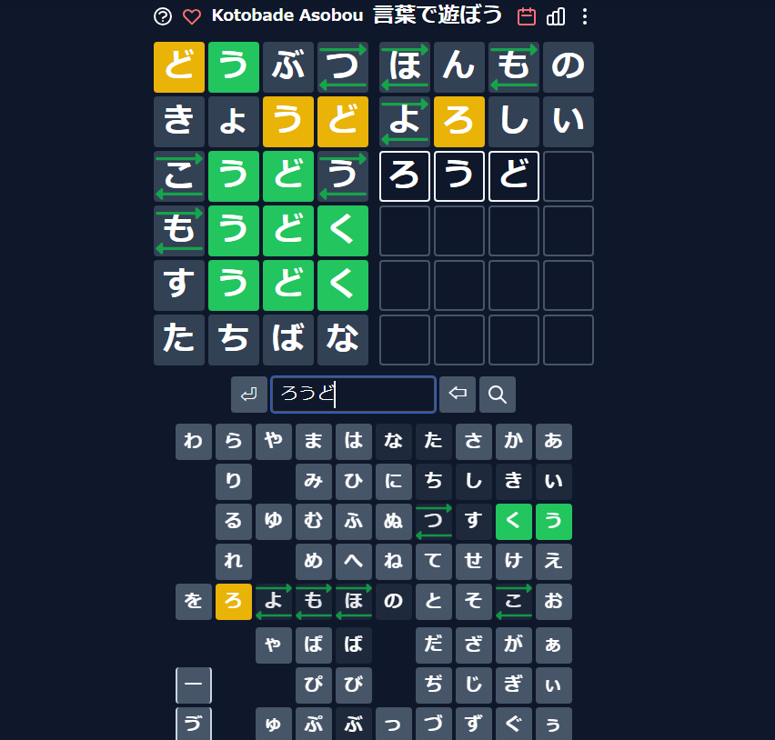

ウェブサイトのリンク：https://taximanli.github.io/kotobade-asobou/

皆さん、ワードルを遊んだことありませんか？数年前流行したゲームですが、日本語版もありますよ。
ワードル(Wordle)というのは英語のゲームで、５文字の言葉を推測するというものです。
この日本語のワードルを二年前ぐらいに見つけたんですけど、楽しいと思っているし、日本語の単語も学べます。
英語のワードルと違って文字が四つと仮名の表に応じて矢印が現れます。
日本語もちろん英語と書き方がずいぶん違いますから、日本語のワードルを作るのは多分難しいと思ったんですが、
この方が本当に日本語の言葉に似合うと思います。
私の統計の数字です。ずいぶん遊んだことありますね。ルールが分からなくても、ウェブサイトにさらに説明してあるから、見てみてくださいね！
因みに、私の一番好きな始めの単語の入力は「あいさつ」ですが、皆さんはどうですか？
それに、皆さんの意見によって、辞書使うとチートだと思いますか？（私だってピンチだったら使いますが。。。^^）